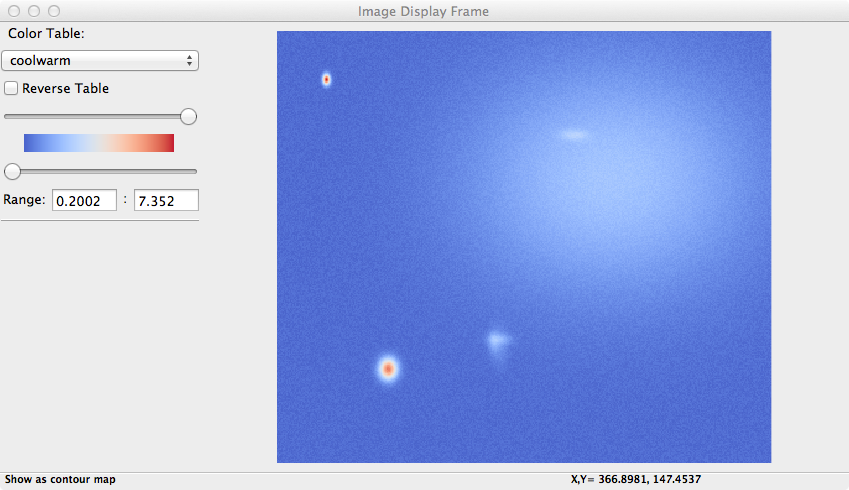
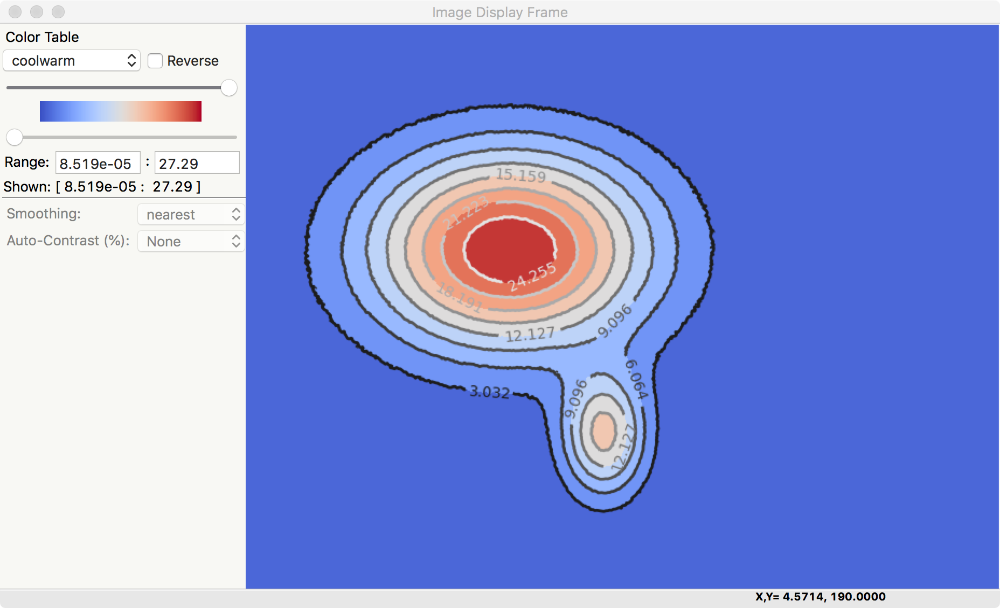
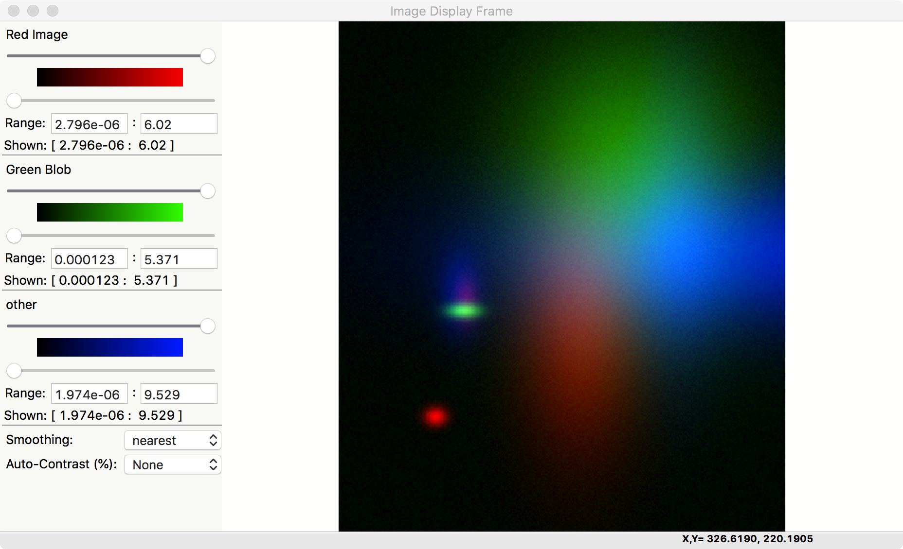
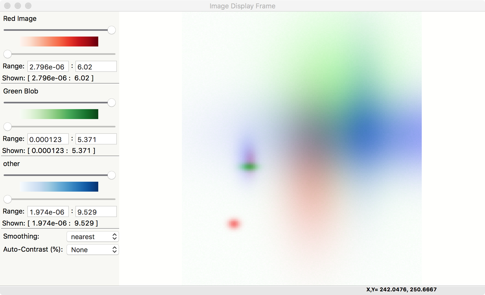

ImagePanel: A wx.Panel for Image Display¶
The ImagePanel class supports image display, including gray-scale
and false-color maps or contour plots for 2-D arrays of intensity.
ImagePanel is derived from a wx.Panel and so can be
easily included in a wx GUI.
While the image can be customized programmatically, the only interactivity
built in to the ImagePanel itself is the ability to zoom in and
out. In contrast, an ImageFrame provides many more ways to
manipulate the displayed image, as will be discussed below.
-
class
imagepanel.ImagePanel(parent, size=(4.5, 4.0), dpi=100, messenger=None, **kws)¶ Create an Image Panel, a
wx.PanelParameters: - parent -- wx parent object.
- size -- figure size in inches.
- dpi -- dots per inch for figure.
- messenger (callable or
None) -- function for accepting output messages.
The size, and dpi arguments are sent to matplotlib's
Figure. The messenger should should be a function that accepts text messages from the panel for informational display. The default value is to usesys.stdout.write().Extra keyword parameters are sent to the wx.Panel.
The configuration settings for an image (its colormap, smoothing, orientation, and so on) are controlled through configuration attributes.
ImagePanel methods¶
-
imagepanel.display(data, x=None, y=None, style='image', **kws)¶ display a new image from the 2-D numpy array data. If provided, the x and y values will be used as coordinates for the pixels for display purposes.
-
imagepanel.clear()¶ clear the image
-
imagepanel.redraw()¶ redraw the image, as when the configuration attributes have been changed.
ImagePanel callback attributes¶
An ImagePanel instance has several callback attributes that can be used to get information from the
image panel.
-
imagepanel.data_callback¶ A function that is called with the data and x and y values each time
display()is called.
-
imagepanel.lasso_callback¶ A function that is called with the data and selected points when the cursor is in lasso mode and a new set of points has been selected.
-
imagepanel.cursor_callback¶ A function that is called with the x and y position clicked on each left-button event.
ImageFrame: A wx.Frame for Image Display¶
In addition to providing a top-level window frame holding an
ImagePanel, an ImageFrame provides the end-user with many ways to
manipulate the image:
- display x, y, intensity coordinates (left-click)
- zoom in on a particular region of the plot (left-drag).
- change color maps.
- flip and rotate image.
- select optional smoothing interpolation.
- modify intensity scales.
- save high-quality plot images (as PNGs), copy to system clipboard, or print.
These options are all available programmatically as well, by setting the configuration attributes and redrawing the image.
-
class
imageframe.ImageFrame(parent, size=(550, 450), **kws)¶ Create an Image Frame, a
wx.Frame. This is a Frame with anImagePaneland several menus and controls for changing the color table and smoothing options as well as switching the display style between "image" and "contour".
Image configuration with ImageConfig¶
To change any of the attributes of the image on an ImagePanel, you
can set the corresponding attribute of the panel's conf. That is,
if you create an ImagePanel, you can set the colormap with:
import matplotlib.cm as cmap
im_panel = ImagePanel(parent)
im_panel.display(data_array)
# now change colormap:
im_panel.conf.cmap = cmap.cool
im_panel.redraw()
# now rotate the image by 90 degrees (clockwise):
im_panel.conf.rot = True
im_panel.redraw()
# now flip the image (top/bottom), apply log-scaling,
# and apply gaussian interpolation
im_panel.conf.flip_ud = True
im_panel.conf.log_scale = True
im_panel.conf.interp = 'gaussian'
im_panel.redraw()
For a ImageFrame, you can access this attribute as frame.panel.conf.cmap.
The list of configuration attributes and their meaning are given in the Table of Image Configuration attributes
Table of Image Configuration attributes: All of these are members of the panel.conf object, as shown in the example above.
attribute type default meaning rot bool False rotate image 90 degrees clockwise flip_ud bool False flip image top/bottom flip_lr bool False flip image left/right log_scale bool False display log(image) auto_intensity bool True auto-scale the intensity cmap colormap gray colormap for intensity scale cmap_reverse bool False reverse colormap interp string nearest interpolation, smoothing algorithm xylims list None xmin, xmax, ymin, ymax for display cmap_lo int 0 low intensity percent for colormap mapping cmap_hi int 100 high intensity percent for colormap mapping int_lo float None low intensity when autoscaling is off int_hi float None high intensity when autoscaling is off style string 'image' 'image' or 'contour' ncontour_levels int 10 number of contour levels contour_levels list None list of contour levels contour_labels list None list of contour labels
Some notes:
- cmap is an instance of a matplotlib colormap.
- cmap_lo and cmap_hi set the low and high values for the sliders that compress the colormap, and are on a scale from 0 to 100.
- In contrast, int_lo and int_hi set the map intensity values that are used when
auto_intensity is
False. These can be used to put two different maps on the same intensity intensity scale.
Examples and Screenshots¶
Basic example¶
A basic plot from a ImageFrame looks like this:
import sys
import wx
import numpy as np
from wxmplot import ImageFrame
y, x = np.mgrid[-5:5:101j, -4:6:101j]
dat = np.sin(x*x/3.0 + y*y)/(1 + (x+y)*(x+y))
x0 = x[0,:]
y0 = y[:,0]
app = wx.App()
frame = ImageFrame(mode='intensity')
frame.display(dat, x=x0, y=y0)
frame.Show()
app.MainLoop()
giving the following image:
{kind=link}
This screenshot shows a long list of choices for color table, a checkbox to reverse the color table, sliders to adjust the upper and lower level, and entries to explicitly set the minimum and maximum intensity.
Clicking on the image will show its coordinates and intensity value. Click-and-Drag will select a rectangular box to zoom in on a particular feature of the image.
The File menu includes options to save an PNG file of the image (Ctrl-S), copy the image to the system clipboard (Ctrl-C), print (Ctrl-P) or print-preview the image, save the image to an ASCII file (table of numbers), or quit the application.
The Options menu includes Zoom Out (Ctrl-Z), rotating the image clockwise (Ctrl-R), flipping the image top/bottom (Ctrl-T) or right/left (Ctrl-F) (note that flipping does not work for contour-style plots) or saving an image of the colormap.
The Contrast menu lets you toggle a log intensity scale (Ctrl-L), or enhance the contrast (Ctrl-E). The Smoothing menu allows you choose from one of several interpolation algorithms.
Contour Example¶
From the Options menu, one can toggle to a 'contour style' plot, in which the levels are made discrete with many fewer levels than the continuous image display. A contour plot can be created like this:
import sys
import wx
import numpy as np
from wxmplot import ImageFrame
y, x = np.mgrid[-5:5:101j, -4:6:101j]
dat = np.sin(x*x/3.0 + y*y)/(1 + (x+y)*(x+y))
x0 = x[0,:]
y0 = y[:,0]
app = wx.App()
frame = ImageFrame(mode='intensity')
frame.display(dat, x=x0, y=y0)
frame.Show()
app.MainLoop()
giving a plot that would look like this:
{kind=link}
In addition, one can bring up a screen to set the number of contour levels.
3-Color Example¶
If the data array has three dimensions, and has a shape of (NY, NX, 3), it is assumed to be a 3 color map, holding Red, Green, and Blue intensities. In this case, the Image Frame will show sliders and min/max controls for each of the three colors. For example:
"""
example showing display of R, G, B maps
"""
import wx
from numpy import exp, random, arange, outer, array
from wxmplot import ImageFrame
def gauss2d(x, y, x0, y0, sx, sy):
return outer( exp( -(((y-y0)/float(sy))**2)/2),
exp( -(((x-x0)/float(sx))**2)/2) )
if __name__ == '__main__':
app = wx.App()
frame = ImageFrame(mode='rgb')
ny, nx = 350, 400
x = arange(nx)
y = arange(ny)
ox = x / 100.0
oy = -1 + y / 200.0
red = 0.02 * random.random(size=nx*ny).reshape(ny, nx)
red = red + (6.0*gauss2d(x, y, 90, 76, 5, 6) +
3.0*gauss2d(x, y, 165, 190, 70, 33) +
2.0*gauss2d(x, y, 180, 100, 12, 6))
green = 0.3 * random.random(size=nx*ny).reshape(ny, nx)
green = green + (5.0*gauss2d(x, y, 173, 98, 4, 9) +
3.2*gauss2d(x, y, 270, 230, 78, 63))
blue = 0.1 * random.random(size=nx*ny).reshape(ny, nx)
blue = blue + (2.9*gauss2d(x, y, 240, 265, 78, 23) +
3.5*gauss2d(x, y, 185, 95, 22, 11) +
7.0*gauss2d(x, y, 220, 310, 40, 133))
dat = array([red, green, blue]).swapaxes(2, 0)
frame.display(dat, x=ox, y=oy,
subtitles={'red':'Red Image', 'green': 'Green Blob', 'blue': 'other'})
frame.Show()
app.MainLoop()
giving a plot that would look like this:
{kind=link}
Note that there is also an Image->Toggle Background Color (Black/White) menu selection that can switch the zero intensity color between black and white. The same image with a white background looks like:
{kind=link}
This gives a slightly different view of the same data, and the images may be more suitable for printed documents and presentations.